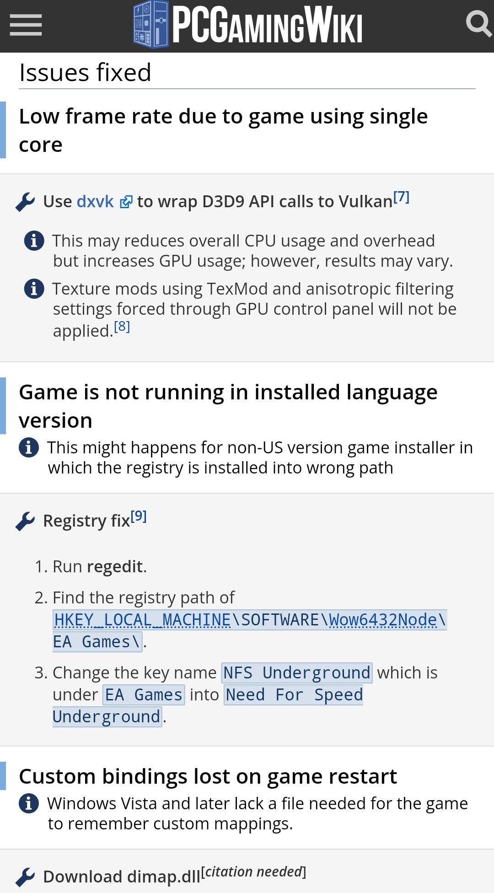

Замечательная программа для того, чтобы поиграть на планшете в спокойные размеренные игры без использования геймпада или связки клавиатуры и мыши. Отлично подходит для гонок, стратегий в реальном времени, головоломок, простеньких 3D платформеров, приключений с видом сверху и прочих. Но вообще, играть с ней можно во что угодно, лишь бы вам было удобно. Размеры экранов у разных планшетов разные (мне с моими большими руками тяжело дотянуться к центру экрана на 11" экране Surface Pro 2), да и игровой опыт на сенсорных экранах у людей разный. Играя в игры через GestureWorks Gameplay ваш игровой опыт будет отличаться от опыта игры на Android планшетах, в первую очередь из-за отсутствия стика. GWG даёт в ваше распоряжение лишь крестовину с дополнительными кнопками по углам, которые имитируют диагональное движение в игре. Оно и логично, так как в играх для ПК управление персонажем осуществляется при помощи клавиш W, A, S, D, что и напоминает крестовину, хотя хотелось бы чтобы разработчики реализовали полноценный стик, как в играх для Android. Увы, но этому не судьба случиться, так как программа уже давно не обновляется и не продаётся... Но мне удалось сохранить её для истории и отвязать от Steam.
Скачать GestureWorks Gameplay
Для начала предлагаю вам посмотреть как выглядит игровой процесс на планшете. Играл я на этом видео ещё на своём старом планшете Cube iWork 8 Ultimate, до того как запорол его BIOS.
Ну что же, теперь давайте поговорим об ограничениях данной программы. Она поддерживает не 100% игр, но совместимость у неё гораздо лучше, чем у программ-конкурентов, которые появлялись во времена актуальности GWG. Для того, чтобы игра подхватила сенсорное управление, она должна использовать DirextX 9 либо DirectX 10. Я читал, что DirectX 11 не поддерживается, однако в моих тестах это не подтвердилось, возможно это просто была старая информация о старой версии GWG.
Но вот DirectX 8 и ниже не поддерживается, это факт. Однако есть выход из данной ситуации, при помощи так называемого враппера мы можем повысить версию DirectX с восьмой до девятой. Для этого вам нужно скачать dxwrapper.zip и скопировать в папку с игрой файлы dxwrapper.dll, dxwrapper.asi, а также dxwrapper.ini. Важно чтобы эти файлы находились рядом с тем исполняемым файлом, который запускает игру. Далее нужно немного подкорректировать файл dxwrapper.ini, который можно открыть при помощи Блокнота.
Было:
[Compatibility]
Dd7to9 = 0
D3d8to9 = 0
DDrawCompat = 0
Dinputto8 = 0
DisableGameUX = 0
DxWnd = 0
EnableDdrawWrapper = 0
EnableD3d9Wrapper = 0
EnableDinput8Wrapper = 0
EnableDsoundWrapper = 0
HandleExceptions = 0
SingleProcAffinity = 0[Compatibility]
Dd7to9 = 0
D3d8to9 = 1
DDrawCompat = 0
Dinputto8 = 0
DisableGameUX = 0
DxWnd = 0
EnableDdrawWrapper = 0
EnableD3d9Wrapper = 1
EnableDinput8Wrapper = 0
EnableDsoundWrapper = 0
HandleExceptions = 0
SingleProcAffinity = 0[Compatibility]
Dd7to9 = 1
D3d8to9 = 0
DDrawCompat = 0
Dinputto8 = 0
DisableGameUX = 0
DxWnd = 0
EnableDdrawWrapper = 1
EnableD3d9Wrapper = 0
EnableDinput8Wrapper = 0
EnableDsoundWrapper = 0
HandleExceptions = 0
SingleProcAffinity = 0Некоторые DirectX 9 игры всё равно не захотят дружить с GWG. Бывает такое, что сенсорные кнопки как бы есть, но они невидимые. Проверить это можно сделав большую кнопку где-нибудь в углу, повесить на неё кнопку Enter или Escape и коснуться в место, где должна была бы быть данная кнопка. Если реакция на нажатие есть, то ясно что это как раз такой случай. Исправить это можно поставив галочку на "Альтернативный режим рендеринга" в редакторе GWG в настройках схемы управления нужной вам игры. Но это не всегда помогает, яркий пример подобной безнадёжной игры с невидимыми кнопками - Bioshock. Также, альтернативный рендеринг следует пробовать если вы видите кнопку GWG, которая в виде полукруга на левой стороне экрана, но не видите остальные кнопки.
В некоторых играх GWG не может отрендерить кнопки из-за видеороликов с логотипами разработчиков и издателя при запуске игры. На этот случай в настройках есть "Задержка в миллисекундах", которая определяет через сколько времени GWG попытается встроиться в игру и отобразить оверлей с сенсорными кнопками. Берём секундомер, засекаем сколько требуется времени, чтобы добраться до главного меню игры с учётом видеороликов и вписываем его в данное поле, в миллисекундах. Можно поступить в этой ситуации немного иначе и попросту выключить показ видеороликов при запуске игры. Делается это по-разному: в какой-то игре нужно дописать аргумент запуска к ярлыку по типу -nointro, в другой игре нужно удалить/переименовать папку, которая содержит в себе данные видеоролики, либо непосредственно сами видеофайлы. В этом плане к каждой игре нужен свой отдельный подход. Узнать способы отключения вступительных видеороликов к разным играм можно на сайте PC Gaming Wiki.
С некоторыми играми GWG будет работать только в окне. Узнать про возможность работы определённой игры в оконном режиме и про способ запуска в окне, если такой имеется, можно всё на том же сайте PC Gaming Wiki.
Если вы запускаете исполняемый файл игры от имени администратора, то в таком случае GWG тоже должен быть запущен от имени администратора. К слову об исполняемых файлах игр, в настройках управления к нужной вам игре нужно указывать именно тот .exe файл, который является непосредственно самой игрой. Например игра Duke Nukem Manhattan Project: нужно указывать не DNMP.exe, так как это всего лишь лаунчер игры с настройками, а prism3d.exe, так как это и есть сама игра. Зачастую отличить лаунчер от самой игры не сложно, но в редких случаях бывает непонятно с какого файла запущена игра и где он находится. В таком случае вы можете узнать нужный файл в Диспетчере задач, кликнув правой кнопкой мыши по процессу с игрой и выбрав пункт "Открыть расположение файла", либо же в самом GWG выбрать не конкретный .exe файл, а процесс запущенной игры из списка всех активных на данный момент процессов.
И напоследок стоит сказать, что некоторые игры, что бы вы не делали, работать с GWG не будут. Исправить это могут только сами разработчики GWG, но так как они забросили данную программу, то считайте что в эту игру уже никак нельзя будет поиграть на сенсорном экране. И ещё, серия Need For Speed (Underground, Underground 2, Most Wanted и Carbon) не дружит с GWG. Кнопки появляются, в меню игры всё отлично работает, но в гонке у кнопок появляется очень большая задержка, которая делает игру неиграбельной. Но поиграть в NFS на сенсоре всё же можно, вам просто понадобится другая программа, сенсорная клавиатура Comfort Keys Pro.